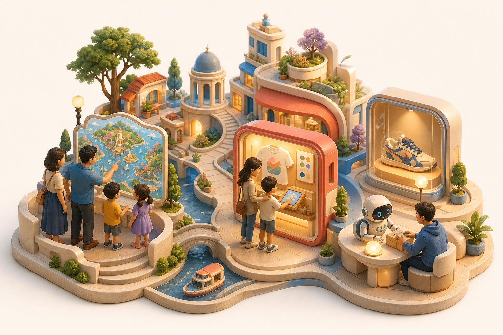

I’m building applications for places, journeys and real things.
SeedCore is where I turn ideas into experiences people can actually use—from playful city discovery and tourist souvenirs to careful handovers of rare collectibles.
Now exploring a small, connected world of useful applications.

One city, many small moments worth making better.
What I’m building
Five application stories, all grounded in a real human moment.
These are active explorations at different stages. Some are working foundations, some are pilot designs, and some are early experiments.
01Foundation in progress
A city you can ask
Digital City
A living guide for discovering local makers, workshops, places, services and stories—useful to both people and their everyday AI assistants.
For
Visitors, residents and local producers
The moment
“What is nearby, open, meaningful and worth visiting?”
What the experience could feel like
Open a map, ask in your own language, discover an artisan or neighborhood route, see where a claim came from, and carry the plan into the real city.
02Pilot design
Make the memory
Tourist Design Studio
A five-minute creative experience where a visitor turns a trip memory into a destination-specific T-shirt they helped design.
For
Museums, attractions, resorts and families
The moment
“I made this on our trip.”
What the experience could feel like
Choose a local theme, make it sillier or more magical, preview the exact shirt, then hand approval and payment to an adult’s phone.
03Experience concept
Play through the journey
Family Journey
A safe, supervised world where children and families explore a destination through stories, playful choices, creative activities and optional immersive scenes.
For
Children, parents and visitor venues
The moment
“Can the journey be part of the adventure?”
What the experience could feel like
Pick a destination theme before the visit, meet a friendly guide on arrival, complete a small creative quest, and take home an approved memory—not a permanent child profile.
04Current focus
Know the pair. Follow the handover.
Rare Shoes
A collector experience that keeps a rare pair’s identity, condition and custody journey clear from authentication through delivery.
For
Collectors, authenticators and custodians
The moment
“Is this the same pair, and did it arrive as expected?”
What the experience could feel like
Compare the registered pair with handoff and delivery captures, understand any mismatch in plain language, and review a simple proof of the journey.
05Demo in development
Friendly help in the room
Robot Moments
Small, understandable applications for a friendly desktop robot—conversation, guided activities, visual companionship and clearly bounded actions.
For
Families, classrooms and live demos
The moment
“Can a robot help without taking over?”
What the experience could feel like
Ask for help, see what the robot plans to do, let it perform one simple action, and understand immediately when it cannot or should not continue.
A journey, not another dashboard
Before the visit. In the moment. A memory afterward.
The tourist and family ideas are designed as one simple arc. The right application appears at the right time; no single screen tries to do everything.
Choose a theme, route or small activity that makes the destination feel personal.
There
Play and create
Explore a bounded story, make choices together, or design a souvenir in minutes.
After
Keep what matters
Take home an approved object or recap, while the private session quietly resets.
Featured application
A rare shoe should arrive with a story you can check.
The Restricted Custody Transfer work becomes a collector-facing experience: identify the pair, follow the handover, and make the final result understandable.
1
At the beginning
Meet the pair
Record its visible details, condition, origin material and physical tag while it is with the authenticator.
→2
On the way
Follow the handover
Keep every approved custodian, scan and observed condition connected to the same journey.
→3
At the end
Check what arrived
Compare delivery observations with the original pair and surface a clear match, review or hold outcome.
The important bit: the technology stays behind the experience. The collector sees what happened, what was checked and whether something needs attention.
How I think
Applications first. Infrastructure only where it earns its place.
01
Start with a human sentence.
“Help me find a maker.” “Let my child create safely.” “Show me that this is the same pair.”
02
Make the moment tangible.
A map, a shirt preview, a playful scene, a collector card or one friendly robot action beats an abstract platform promise.
03
Keep approval human.
AI can help with ideas and explanations. People stay in charge of purchases, publishing, private data and real-world handovers.
04
Show what is real.
Every concept is labeled honestly: in progress, pilot design, demo or early exploration.
About SeedCore
I’m not trying to sell a giant technology layer. I’m trying to make a few meaningful applications real.
My work moves between city experiences, commerce, creative tools and physical-world interactions. The common thread is simple: digital products should help people understand a place, make something personal, or feel more confident about what happens next.